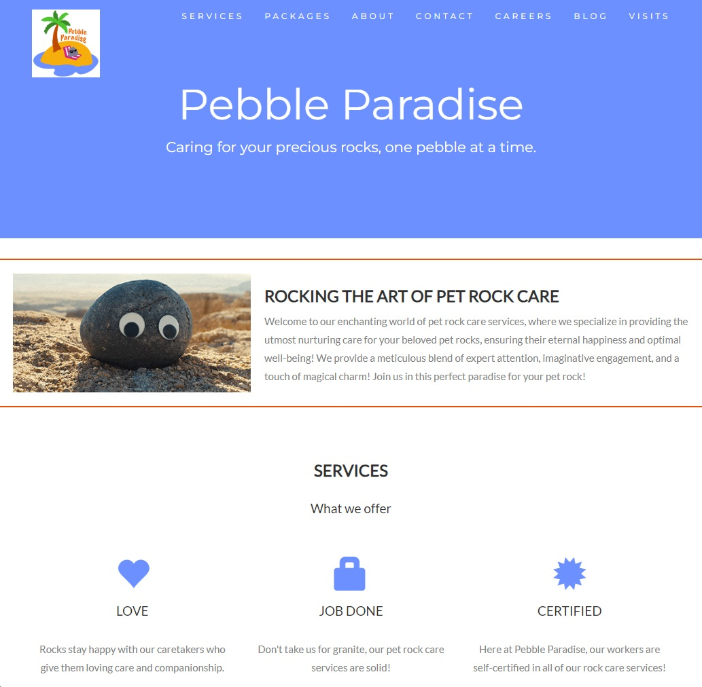

Craigslist Extension
Created a Chrome Extension for the Las Cruces Craigslist website that
improved aesthetics and user experience.
The video gives a demonstration of the extension.
Once the user installs the extension, turns it on, and navigates to
https://lascruces.craigslist.org/,
the extension automatically redirects
the user to
https://pebbleparadise.com/ craigslist/.
The Pebble Paradise page is a redesigned version of the original Craigslist page,
but it features a modernized layout that removes a lot of the clutter.
We created a navbar with dropdown menus for each section on the left side of the page,
and used JavaScript methods to allow those sections to be saved and accessible in the favorites bar.
Pebble Paradise
Click HERE to visit website
Collaborated in a group utilizing GitHub Pages to create a non-commercial website
for a pet rock sitting service.
The picture is a screenshot of the front page of the Pebble Paradise website.
We used HTML and CSS for front end web development to implement our planned web design;
and we also made a unique visitor counter for the website through back end web development
with JavaScript and CloudFlare Workers KV.